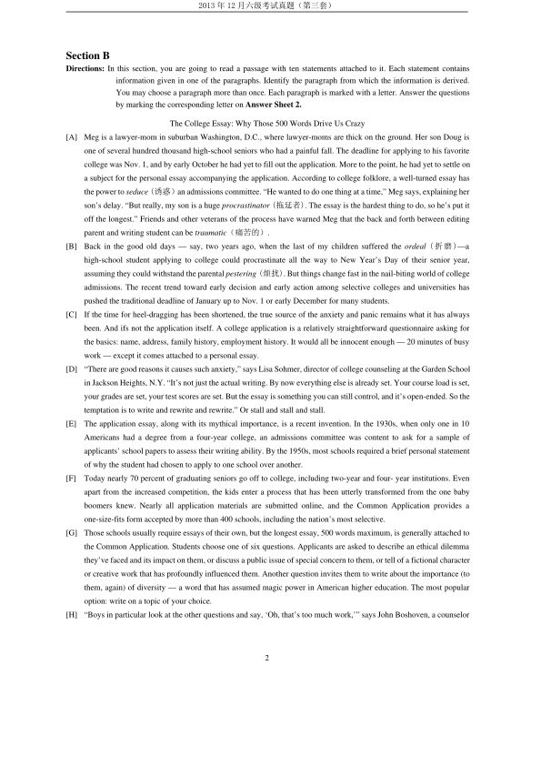
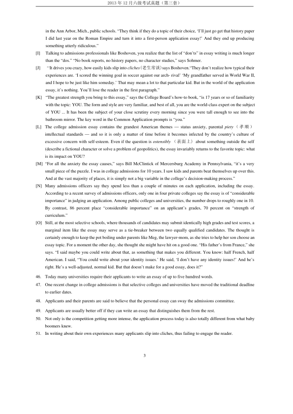
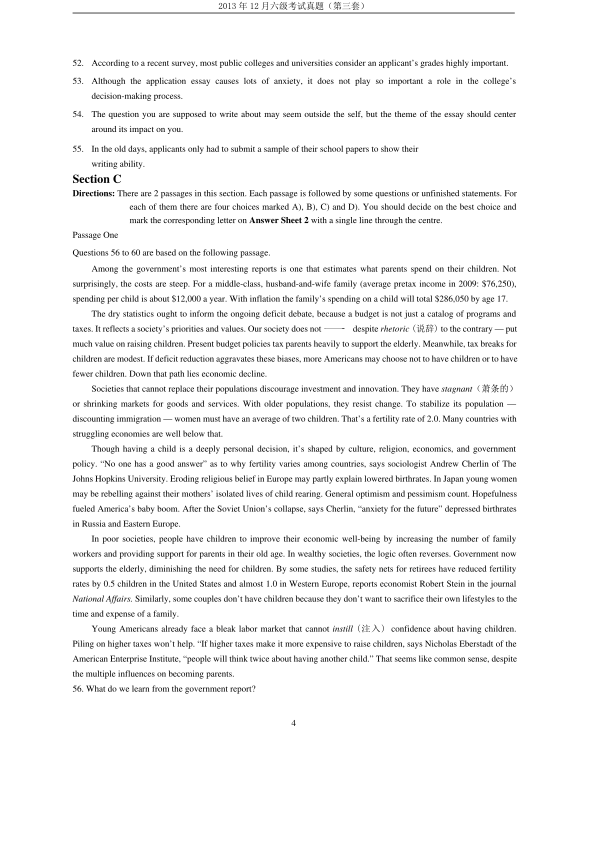
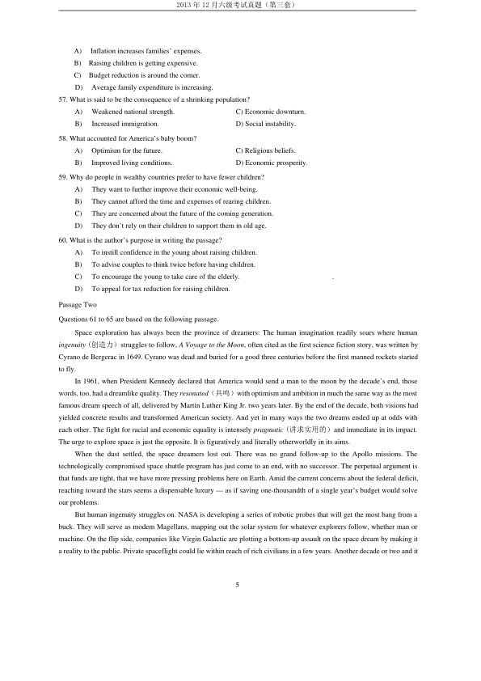
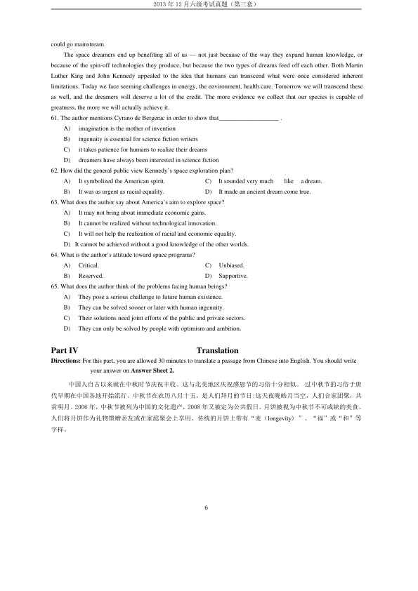

第 1 / 6 页

2013 年12 月六级考试真题（第三套）
1
2013 年12 月六级考试真题（第三套）
PartⅠ
Writing
Directions：For this part you are allowed 30 minutes to write an essay about the impact of the information explosion by
referring to the saying “A wealth of information creates a poverty of attention.” You can give examples
to illustrate your point and then explain what you can do to avoid being distracted by irrelevant
information. You should write at least 150 words but no more than 200 words.
Part II
Listening Comprehension
说明：2013 年12 月六级真题全国共考了两套听力。本套（即第三套）的听力内容与第二套的内容完全相同，只
是选项的顺序不一样而已，故在本套中没有重复给出。
Part III
Reading Comprehension
Section A
Directions：In this section, there is a passage with ten blanks. You are required to select one word- far each blank from a list
of choices given in a word bank following the passage. Read the passage through carefully before making
your choices. Each choice in the bank is identified by a letter. Please mark the corresponding letter for each
item on Answer Sheet 2 with a single line through the centre. You may not use any of the words in the
bank more than once.
Questions 36 to 45 are based on the following passage.
Some performance evaluations require supervisors to take action. Employees who receive a very favorable
evaluation may deserve some type of recognition or even a promotion. If supervisors do not acknowledge such
outstanding performance, employees may either lose their 36 and reduce their effort or search for a new job at a firm
that will 37 them for high performance. Supervisors should acknowledge high performance so that the employee will
continue to perform well in the future.
Employees who receive unfavorable evaluations must also be given attention. Supervisors must 38
the reasons for
poor performance. Some reasons, such as a family illness, may have a temporary adverse 39 on performance and can be
corrected. Other reasons, such as a bad attitude, may not be temporary. When supervisors give employees an unfavorable
evaluation, they must decide whether to take any 40 actions. If the employees were unaware of their own deficiencies, the
unfavorable evaluation can pinpoint（指出）the deficiencies that employees must correct. In this case, the supervisor may
simply need to monitor the employees 41 and ensure that the deficiencies are corrected.
If the employees were already aware of their deficiencies before the evaluation period, however, they may be unable or
unwilling to correct them. This situation is more serious, and the supervisor may need to take action. The action should be
42
with the firm’s guidelines and may include reassigning the employees to new jobs,
43
them temporarily, or firing
them. A supervisor’s action toward a poorly performing worker can
44
the attitudes of other employees. If no
45
is
imposed on an employee for poor performance, other employees may react by reducing their productivity as well.
A) additional
I) identify
B) affect
J) impact
C) aptly
K) penalty
D) assimilate
L) reward
E) circulation
M) simplifying
F) closely
N) suspending
G)consistent
H)enthusiasm
O) vulnerable
查看 / 复制本页文字
2013 年12 月六级考试真题（第三套） 1 2013 年12 月六级考试真题（第三套） PartⅠ Writing Directions：For this part you are allowed 30 minutes to write an essay about the impact of the information explosion by referring to the saying “A wealth of information creates a poverty of attention.” You can give examples to illustrate your point and then explain what you can do to avoid being distracted by irrelevant information. You should write at least 150 words but no more than 200 words. Part II Listening Comprehension 说明：2013 年12 月六级真题全国共考了两套听力。本套（即第三套）的听力内容与第二套的内容完全相同，只 是选项的顺序不一样而已，故在本套中没有重复给出。 Part III Reading Comprehension Section A Directions：In this section, there is a passage with ten blanks. You are required to select one word- far each blank from a list of choices given in a word bank following the passage. Read the passage through carefully before making your choices. Each choice in the bank is identified by a letter. Please mark the corresponding letter for each item on Answer Sheet 2 with a single line through the centre. You may not use any of the words in the bank more than once. Questions 36 to 45 are based on the following passage. Some performance evaluations require supervisors to take action. Employees who receive a very favorable evaluation may deserve some type of recognition or even a promotion. If supervisors do not acknowledge such outstanding performance, employees may either lose their 36 and reduce their effort or search for a new job at a firm that will 37 them for high performance. Supervisors should acknowledge high performance so that the employee will continue to perform well in the future. Employees who receive unfavorable evaluations must also be given attention. Supervisors must 38 the reasons for poor performance. Some reasons, such as a family illness, may have a temporary adverse 39 on performance and can be corrected. Other reasons, such as a bad attitude, may not be temporary. When supervisors give employees an unfavorable evaluation, they must decide whether to take any 40 actions. If the employees were unaware of their own deficiencies, the unfavorable evaluation can pinpoint（指出）the deficiencies that employees must correct. In this case, the supervisor may simply need to monitor the employees 41 and ensure that the deficiencies are corrected. If the employees were already aware of their deficiencies before the evaluation period, however, they may be unable or unwilling to correct them. This situation is more serious, and the supervisor may need to take action. The action should be 42 with the firm’s guidelines and may include reassigning the employees to new jobs, 43 them temporarily, or firing them. A supervisor’s action toward a poorly performing worker can 44 the attitudes of other employees. If no 45 is imposed on an employee for poor performance, other employees may react by reducing their productivity as well. A) additional I) identify B) affect J) impact C) aptly K) penalty D) assimilate L) reward E) circulation M) simplifying F) closely N) suspending G)consistent H)enthusiasm O) vulnerable
第 2 / 6 页

2013 年12 月六级考试真题（第三套）
2
Section B
Directions: In this section, you are going to read a passage with ten statements attached to it. Each statement contains
information given in one of the paragraphs. Identify the paragraph from which the information is derived.
You may choose a paragraph more than once. Each paragraph is marked with a letter. Answer the questions
by marking the corresponding letter on Answer Sheet 2.
The College Essay: Why Those 500 Words Drive Us Crazy
[A]
Meg is a lawyer-mom in suburban Washington, D.C., where lawyer-moms are thick on the ground. Her son Doug is
one of several hundred thousand high-school seniors who had a painful fall. The deadline for applying to his favorite
college was Nov. 1, and by early October he had yet to fill out the application. More to the point, he had yet to settle on
a subject for the personal essay accompanying the application. According to college folklore, a well-turned essay has
the power to seduce (诱惑）an admissions committee. “He wanted to do one thing at a time,” Meg says, explaining her
son’s delay. “But really, my son is a huge procrastinator (拖延者). The essay is the hardest thing to do, so he’s put it
off the longest.” Friends and other veterans of the process have warned Meg that the back and forth between editing
parent and writing student can be traumatic（痛苦的）.
[B]
Back in the good old days — say, two years ago, when the last of my children suffered the ordeal (折磨)—a
high-school student applying to college could procrastinate all the way to New Year’s Day of their senior year,
assuming they could withstand the parental pestering (烦扰). But things change fast in the nail-biting world of college
admissions. The recent trend toward early decision and early action among selective colleges and universities has
pushed the traditional deadline of January up to Nov. 1 or early December for many students.
[C]
If the time for heel-dragging has been shortened, the true source of the anxiety and panic remains what it has always
been. And ifs not the application itself. A college application is a relatively straightforward questionnaire asking for
the basics: name, address, family history, employment history. It would all be innocent enough — 20 minutes of busy
work — except it comes attached to a personal essay.
[D]
“There are good reasons it causes such anxiety,” says Lisa Sohmer, director of college counseling at the Garden School
in Jackson Heights, N.Y. “It’s not just the actual writing. By now everything else is already set. Your course load is set,
your grades are set, your test scores are set. But the essay is something you can still control, and it’s open-ended. So the
temptation is to write and rewrite and rewrite.” Or stall and stall and stall.
[E]
The application essay, along with its mythical importance, is a recent invention. In the 1930s, when only one in 10
Americans had a degree from a four-year college, an admissions committee was content to ask for a sample of
applicants’ school papers to assess their writing ability. By the 1950s, most schools required a brief personal statement
of why the student had chosen to apply to one school over another.
[F]
Today nearly 70 percent of graduating seniors go off to college, including two-year and four- year institutions. Even
apart from the increased competition, the kids enter a process that has been utterly transformed from the one baby
boomers knew. Nearly all application materials are submitted online, and the Common Application provides a
one-size-fits form accepted by more than 400 schools, including the nation’s most selective.
[G]
Those schools usually require essays of their own, but the longest essay, 500 words maximum, is generally attached to
the Common Application. Students choose one of six questions. Applicants are asked to describe an ethical dilemma
they’ve faced and its impact on them, or discuss a public issue of special concern to them, or tell of a fictional character
or creative work that has profoundly influenced them. Another question invites them to write about the importance (to
them, again) of diversity — a word that has assumed magic power in American higher education. The most popular
option: write on a topic of your choice.
[H]
“Boys in particular look at the other questions and say, ‘Oh, that’s too much work,’” says John Boshoven, a counselor
查看 / 复制本页文字
2013 年12 月六级考试真题（第三套） 2 Section B Directions: In this section, you are going to read a passage with ten statements attached to it. Each statement contains information given in one of the paragraphs. Identify the paragraph from which the information is derived. You may choose a paragraph more than once. Each paragraph is marked with a letter. Answer the questions by marking the corresponding letter on Answer Sheet 2. The College Essay: Why Those 500 Words Drive Us Crazy [A] Meg is a lawyer-mom in suburban Washington, D.C., where lawyer-moms are thick on the ground. Her son Doug is one of several hundred thousand high-school seniors who had a painful fall. The deadline for applying to his favorite college was Nov. 1, and by early October he had yet to fill out the application. More to the point, he had yet to settle on a subject for the personal essay accompanying the application. According to college folklore, a well-turned essay has the power to seduce (诱惑）an admissions committee. “He wanted to do one thing at a time,” Meg says, explaining her son’s delay. “But really, my son is a huge procrastinator (拖延者). The essay is the hardest thing to do, so he’s put it off the longest.” Friends and other veterans of the process have warned Meg that the back and forth between editing parent and writing student can be traumatic（痛苦的）. [B] Back in the good old days — say, two years ago, when the last of my children suffered the ordeal (折磨)—a high-school student applying to college could procrastinate all the way to New Year’s Day of their senior year, assuming they could withstand the parental pestering (烦扰). But things change fast in the nail-biting world of college admissions. The recent trend toward early decision and early action among selective colleges and universities has pushed the traditional deadline of January up to Nov. 1 or early December for many students. [C] If the time for heel-dragging has been shortened, the true source of the anxiety and panic remains what it has always been. And ifs not the application itself. A college application is a relatively straightforward questionnaire asking for the basics: name, address, family history, employment history. It would all be innocent enough — 20 minutes of busy work — except it comes attached to a personal essay. [D] “There are good reasons it causes such anxiety,” says Lisa Sohmer, director of college counseling at the Garden School in Jackson Heights, N.Y. “It’s not just the actual writing. By now everything else is already set. Your course load is set, your grades are set, your test scores are set. But the essay is something you can still control, and it’s open-ended. So the temptation is to write and rewrite and rewrite.” Or stall and stall and stall. [E] The application essay, along with its mythical importance, is a recent invention. In the 1930s, when only one in 10 Americans had a degree from a four-year college, an admissions committee was content to ask for a sample of applicants’ school papers to assess their writing ability. By the 1950s, most schools required a brief personal statement of why the student had chosen to apply to one school over another. [F] Today nearly 70 percent of graduating seniors go off to college, including two-year and four- year institutions. Even apart from the increased competition, the kids enter a process that has been utterly transformed from the one baby boomers knew. Nearly all application materials are submitted online, and the Common Application provides a one-size-fits form accepted by more than 400 schools, including the nation’s most selective. [G] Those schools usually require essays of their own, but the longest essay, 500 words maximum, is generally attached to the Common Application. Students choose one of six questions. Applicants are asked to describe an ethical dilemma they’ve faced and its impact on them, or discuss a public issue of special concern to them, or tell of a fictional character or creative work that has profoundly influenced them. Another question invites them to write about the importance (to them, again) of diversity — a word that has assumed magic power in American higher education. The most popular option: write on a topic of your choice. [H] “Boys in particular look at the other questions and say, ‘Oh, that’s too much work,’” says John Boshoven, a counselor
第 3 / 6 页

2013 年12 月六级考试真题（第三套）
3
in the Ann Arbor, Mich., public schools. “They think if they do a topic of their choice, ‘I’ll just go get that history paper
I did last year on the Roman Empire and turn it into a first-person application essay!’ And they end up producing
something utterly ridiculous.”
[I]
Talking to admissions professionals like Boshoven, you realize that the list of “don’ts” in essay writing is much longer
than the “dos.” “No book reports, no history papers, no character studies,” says Sohmer.
[J]
‘‘It drives you crazy, how easily kids slip into cliches(老生常谈)says Boshoven.“They don’t realize how typical their
experiences are. ‘I scored the winning goal in soccer against our arch- rival’ ‘My grandfather served in World War II,
and I hope to be just like him someday.’ That may mean a lot to that particular kid. But in the world of the application
essay, it’s nothing. You’ll lose the reader in the first paragraph.”
[K]
“The greatest strength you bring to this essay,” says the College Board’s how-to book, “is 17 years or so of familiarity
with the topic: YOU. The form and style are very familiar, and best of all, you are the world-class expert on the subject
of YOU ... It has been the subject of your close scrutiny every morning since you were tall enough to see into the
bathroom mirror. The key word in the Common Application prompts is “you.”
[L]
The college admission essay contains the grandest American themes — status anxiety, parental piety （孝顺）
intellectual standards — and so it is only a matter of time before it becomes infected by the country’s culture of
excessive concern with self-esteem. Even if the question is ostensibly （表面上) about something outside the self
(describe a fictional character or solve a problem of geopolitics), the essay invariably returns to the favorite topic: what
is its impact on YOU?
[M] “For all the anxiety the essay causes,” says Bill McClintick of Mercersburg Academy in Pennsylvania, “it’s a very
small piece of the puzzle. I was in college admissions for 10 years. I saw kids and parents beat themselves up over this.
And at the vast majority of places, it is simply not a big variable in the college’s decision-making process.”
[N] Many admissions officers say they spend less than a couple of minutes on each application, including the essay.
According to a recent survey of admissions officers, only one in four private colleges say the essay is of “considerable
importance” in judging an application. Among public colleges and universities, the number drops to roughly one in 10.
By contrast, 86 percent place “considerable importance” on an applicant’s grades, 70 percent on “strength of
curriculum.”
[O] Still, at the most selective schools, where thousands of candidates may submit identically high grades and test scores, a
marginal item like the essay may serve as a tie-breaker between two equally qualified candidates. The thought is
certainly enough to keep the pot boiling under parents like Meg, the lawyer-mom, as she tries to help her son choose an
essay topic. For a moment the other day, she thought she might have hit on a good one. “His father’s from France,” she
says. “I said maybe you could write about that, as something that makes you different. You know: half French, half
American. I said, “You could write about your identity issues.’ He said, ‘I don’t have any identity issues!’ And he’s
right. He’s a well-adjusted, normal kid. But that doesn’t make for a good essay, does it?”
46.
Today many universities require their applicants to write an essay of up to five hundred words.
47.
One recent change in college admissions is that selective colleges and universities have moved the traditional deadline
to earlier dates.
48.
Applicants and their parents are said to believe that the personal essay can sway the admissions committee.
49.
Applicants are usually better off if they can write an essay that distinguishes them from the rest.
50.
Not only is the competition getting more intense, the application process today is also totally different from what baby
boomers knew.
51.
In writing about their own experiences many applicants slip into cliches, thus failing to engage the reader.
查看 / 复制本页文字
2013 年12 月六级考试真题（第三套） 3 in the Ann Arbor, Mich., public schools. “They think if they do a topic of their choice, ‘I’ll just go get that history paper I did last year on the Roman Empire and turn it into a first-person application essay!’ And they end up producing something utterly ridiculous.” [I] Talking to admissions professionals like Boshoven, you realize that the list of “don’ts” in essay writing is much longer than the “dos.” “No book reports, no history papers, no character studies,” says Sohmer. [J] ‘‘It drives you crazy, how easily kids slip into cliches(老生常谈)says Boshoven.“They don’t realize how typical their experiences are. ‘I scored the winning goal in soccer against our arch- rival’ ‘My grandfather served in World War II, and I hope to be just like him someday.’ That may mean a lot to that particular kid. But in the world of the application essay, it’s nothing. You’ll lose the reader in the first paragraph.” [K] “The greatest strength you bring to this essay,” says the College Board’s how-to book, “is 17 years or so of familiarity with the topic: YOU. The form and style are very familiar, and best of all, you are the world-class expert on the subject of YOU ... It has been the subject of your close scrutiny every morning since you were tall enough to see into the bathroom mirror. The key word in the Common Application prompts is “you.” [L] The college admission essay contains the grandest American themes — status anxiety, parental piety （孝顺） intellectual standards — and so it is only a matter of time before it becomes infected by the country’s culture of excessive concern with self-esteem. Even if the question is ostensibly （表面上) about something outside the self (describe a fictional character or solve a problem of geopolitics), the essay invariably returns to the favorite topic: what is its impact on YOU? [M] “For all the anxiety the essay causes,” says Bill McClintick of Mercersburg Academy in Pennsylvania, “it’s a very small piece of the puzzle. I was in college admissions for 10 years. I saw kids and parents beat themselves up over this. And at the vast majority of places, it is simply not a big variable in the college’s decision-making process.” [N] Many admissions officers say they spend less than a couple of minutes on each application, including the essay. According to a recent survey of admissions officers, only one in four private colleges say the essay is of “considerable importance” in judging an application. Among public colleges and universities, the number drops to roughly one in 10. By contrast, 86 percent place “considerable importance” on an applicant’s grades, 70 percent on “strength of curriculum.” [O] Still, at the most selective schools, where thousands of candidates may submit identically high grades and test scores, a marginal item like the essay may serve as a tie-breaker between two equally qualified candidates. The thought is certainly enough to keep the pot boiling under parents like Meg, the lawyer-mom, as she tries to help her son choose an essay topic. For a moment the other day, she thought she might have hit on a good one. “His father’s from France,” she says. “I said maybe you could write about that, as something that makes you different. You know: half French, half American. I said, “You could write about your identity issues.’ He said, ‘I don’t have any identity issues!’ And he’s right. He’s a well-adjusted, normal kid. But that doesn’t make for a good essay, does it?” 46. Today many universities require their applicants to write an essay of up to five hundred words. 47. One recent change in college admissions is that selective colleges and universities have moved the traditional deadline to earlier dates. 48. Applicants and their parents are said to believe that the personal essay can sway the admissions committee. 49. Applicants are usually better off if they can write an essay that distinguishes them from the rest. 50. Not only is the competition getting more intense, the application process today is also totally different from what baby boomers knew. 51. In writing about their own experiences many applicants slip into cliches, thus failing to engage the reader.
第 4 / 6 页

2013 年12 月六级考试真题（第三套）
4
52.
According to a recent survey, most public colleges and universities consider an applicant’s grades highly important.
53.
Although the application essay causes lots of anxiety, it does not play so important a role in the college’s
decision-making process.
54.
The question you are supposed to write about may seem outside the self, but the theme of the essay should center
around its impact on you.
55.
In the old days, applicants only had to submit a sample of their school papers to show their
writing ability.
Section C
Directions: There are 2 passages in this section. Each passage is followed by some questions or unfinished statements. For
each of them there are four choices marked A), B), C) and D). You should decide on the best choice and
mark the corresponding letter on Answer Sheet 2 with a single line through the centre.
Passage One
Questions 56 to 60 are based on the following passage.
Among the government’s most interesting reports is one that estimates what parents spend on their children. Not
surprisingly, the costs are steep. For a middle-class, husband-and-wife family (average pretax income in 2009: $76,250),
spending per child is about $12,000 a year. With inflation the family’s spending on a child will total $286,050 by age 17.
The dry statistics ought to inform the ongoing deficit debate, because a budget is not just a catalog of programs and
taxes. It reflects a society’s priorities and values. Our society does not一despite rhetoric (说辞) to the contrary — put
much value on raising children. Present budget policies tax parents heavily to support the elderly. Meanwhile, tax breaks for
children are modest. If deficit reduction aggravates these biases, more Americans may choose not to have children or to have
fewer children. Down that path lies economic decline.
Societies that cannot replace their populations discourage investment and innovation. They have stagnant（萧条的）
or shrinking markets for goods and services. With older populations, they resist change. To stabilize its population —
discounting immigration — women must have an average of two children. That’s a fertility rate of 2.0. Many countries with
struggling economies are well below that.
Though having a child is a deeply personal decision, it’s shaped by culture, religion, economics, and government
policy. “No one has a good answer” as to why fertility varies among countries, says sociologist Andrew Cherlin of The
Johns Hopkins University. Eroding religious belief in Europe may partly explain lowered birthrates. In Japan young women
may be rebelling against their mothers’ isolated lives of child rearing. General optimism and pessimism count. Hopefulness
fueled America’s baby boom. After the Soviet Union’s collapse, says Cherlin, “anxiety for the future” depressed birthrates
in Russia and Eastern Europe.
In poor societies, people have children to improve their economic well-being by increasing the number of family
workers and providing support for parents in their old age. In wealthy societies, the logic often reverses. Government now
supports the elderly, diminishing the need for children. By some studies, the safety nets for retirees have reduced fertility
rates by 0.5 children in the United States and almost 1.0 in Western Europe, reports economist Robert Stein in the journal
National Affairs. Similarly, some couples don’t have children because they don’t want to sacrifice their own lifestyles to the
time and expense of a family.
Young Americans already face a bleak labor market that cannot instill (注入) confidence about having children.
Piling on higher taxes won’t help. “If higher taxes make it more expensive to raise children, says Nicholas Eberstadt of the
American Enterprise Institute, “people will think twice about having another child.” That seems like common sense, despite
the multiple influences on becoming parents.
56. What do we learn from the government report?
查看 / 复制本页文字
2013 年12 月六级考试真题（第三套） 4 52. According to a recent survey, most public colleges and universities consider an applicant’s grades highly important. 53. Although the application essay causes lots of anxiety, it does not play so important a role in the college’s decision-making process. 54. The question you are supposed to write about may seem outside the self, but the theme of the essay should center around its impact on you. 55. In the old days, applicants only had to submit a sample of their school papers to show their writing ability. Section C Directions: There are 2 passages in this section. Each passage is followed by some questions or unfinished statements. For each of them there are four choices marked A), B), C) and D). You should decide on the best choice and mark the corresponding letter on Answer Sheet 2 with a single line through the centre. Passage One Questions 56 to 60 are based on the following passage. Among the government’s most interesting reports is one that estimates what parents spend on their children. Not surprisingly, the costs are steep. For a middle-class, husband-and-wife family (average pretax income in 2009: $76,250), spending per child is about $12,000 a year. With inflation the family’s spending on a child will total $286,050 by age 17. The dry statistics ought to inform the ongoing deficit debate, because a budget is not just a catalog of programs and taxes. It reflects a society’s priorities and values. Our society does not一despite rhetoric (说辞) to the contrary — put much value on raising children. Present budget policies tax parents heavily to support the elderly. Meanwhile, tax breaks for children are modest. If deficit reduction aggravates these biases, more Americans may choose not to have children or to have fewer children. Down that path lies economic decline. Societies that cannot replace their populations discourage investment and innovation. They have stagnant（萧条的） or shrinking markets for goods and services. With older populations, they resist change. To stabilize its population — discounting immigration — women must have an average of two children. That’s a fertility rate of 2.0. Many countries with struggling economies are well below that. Though having a child is a deeply personal decision, it’s shaped by culture, religion, economics, and government policy. “No one has a good answer” as to why fertility varies among countries, says sociologist Andrew Cherlin of The Johns Hopkins University. Eroding religious belief in Europe may partly explain lowered birthrates. In Japan young women may be rebelling against their mothers’ isolated lives of child rearing. General optimism and pessimism count. Hopefulness fueled America’s baby boom. After the Soviet Union’s collapse, says Cherlin, “anxiety for the future” depressed birthrates in Russia and Eastern Europe. In poor societies, people have children to improve their economic well-being by increasing the number of family workers and providing support for parents in their old age. In wealthy societies, the logic often reverses. Government now supports the elderly, diminishing the need for children. By some studies, the safety nets for retirees have reduced fertility rates by 0.5 children in the United States and almost 1.0 in Western Europe, reports economist Robert Stein in the journal National Affairs. Similarly, some couples don’t have children because they don’t want to sacrifice their own lifestyles to the time and expense of a family. Young Americans already face a bleak labor market that cannot instill (注入) confidence about having children. Piling on higher taxes won’t help. “If higher taxes make it more expensive to raise children, says Nicholas Eberstadt of the American Enterprise Institute, “people will think twice about having another child.” That seems like common sense, despite the multiple influences on becoming parents. 56. What do we learn from the government report?
第 5 / 6 页

2013 年12 月六级考试真题（第三套）
5
A)
Inflation increases families’ expenses.
B)
Raising children is getting expensive.
C)
Budget reduction is around the comer.
D)
Average family expenditure is increasing.
57. What is said to be the consequence of a shrinking population?
A)
Weakened national strength.
C) Economic downturn.
B)
Increased immigration.
D) Social instability.
58. What accounted for America’s baby boom?
A)
Optimism for the future.
C) Religious beliefs.
B)
Improved living conditions.
D) Economic prosperity.
59. Why do people in wealthy countries prefer to have fewer children?
A)
They want to further improve their economic well-being.
B)
They cannot afford the time and expenses of rearing children.
C)
They are concerned about the future of the coming generation.
D)
They don’t rely on their children to support them in old age.
60. What is the author’s purpose in writing the passage?
A)
To instill confidence in the young about raising children.
B)
To advise couples to think twice before having children.
C)
To encourage the young to take care of the elderly.
.
D)
To appeal for tax reduction for raising children.
Passage Two
Questions 61 to 65 are based on the following passage.
Space exploration has always been the province of dreamers: The human imagination readily soars where human
ingenuity (创造力）struggles to follow, A Voyage to the Moon, often cited as the first science fiction story, was written by
Cyrano de Bergerac in 1649. Cyrano was dead and buried for a good three centuries before the first manned rockets started
to fly.
In 1961, when President Kennedy declared that America would send a man to the moon by the decade’s end, those
words, too, had a dreamlike quality. They resonated（共鸣）with optimism and ambition in much the same way as the most
famous dream speech of all, delivered by Martin Luther King Jr. two years later. By the end of the decade, both visions had
yielded concrete results and transformed American society. And yet in many ways the two dreams ended up at odds with
each other. The fight for racial and economic equality is intensely pragmatic (讲求实用的）and immediate in its impact.
The urge to explore space is just the opposite. It is figuratively and literally otherworldly in its aims.
When the dust settled, the space dreamers lost out. There was no grand follow-up to the Apollo missions. The
technologically compromised space shuttle program has just come to an end, with no successor. The perpetual argument is
that funds are tight, that we have more pressing problems here on Earth. Amid the current concerns about the federal deficit,
reaching toward the stars seems a dispensable luxury — as if saving one-thousandth of a single year’s budget would solve
our problems.
But human ingenuity struggles on. NASA is developing a series of robotic probes that will get the most bang from a
buck. They will serve as modem Magellans, mapping out the solar system for whatever explorers follow, whether man or
machine. On the flip side, companies like Virgin Galactic are plotting a bottom-up assault on the space dream by making it
a reality to the public. Private spaceflight could lie within reach of rich civilians in a few years. Another decade or two and it
查看 / 复制本页文字
2013 年12 月六级考试真题（第三套） 5 A) Inflation increases families’ expenses. B) Raising children is getting expensive. C) Budget reduction is around the comer. D) Average family expenditure is increasing. 57. What is said to be the consequence of a shrinking population? A) Weakened national strength. C) Economic downturn. B) Increased immigration. D) Social instability. 58. What accounted for America’s baby boom? A) Optimism for the future. C) Religious beliefs. B) Improved living conditions. D) Economic prosperity. 59. Why do people in wealthy countries prefer to have fewer children? A) They want to further improve their economic well-being. B) They cannot afford the time and expenses of rearing children. C) They are concerned about the future of the coming generation. D) They don’t rely on their children to support them in old age. 60. What is the author’s purpose in writing the passage? A) To instill confidence in the young about raising children. B) To advise couples to think twice before having children. C) To encourage the young to take care of the elderly. . D) To appeal for tax reduction for raising children. Passage Two Questions 61 to 65 are based on the following passage. Space exploration has always been the province of dreamers: The human imagination readily soars where human ingenuity (创造力）struggles to follow, A Voyage to the Moon, often cited as the first science fiction story, was written by Cyrano de Bergerac in 1649. Cyrano was dead and buried for a good three centuries before the first manned rockets started to fly. In 1961, when President Kennedy declared that America would send a man to the moon by the decade’s end, those words, too, had a dreamlike quality. They resonated（共鸣）with optimism and ambition in much the same way as the most famous dream speech of all, delivered by Martin Luther King Jr. two years later. By the end of the decade, both visions had yielded concrete results and transformed American society. And yet in many ways the two dreams ended up at odds with each other. The fight for racial and economic equality is intensely pragmatic (讲求实用的）and immediate in its impact. The urge to explore space is just the opposite. It is figuratively and literally otherworldly in its aims. When the dust settled, the space dreamers lost out. There was no grand follow-up to the Apollo missions. The technologically compromised space shuttle program has just come to an end, with no successor. The perpetual argument is that funds are tight, that we have more pressing problems here on Earth. Amid the current concerns about the federal deficit, reaching toward the stars seems a dispensable luxury — as if saving one-thousandth of a single year’s budget would solve our problems. But human ingenuity struggles on. NASA is developing a series of robotic probes that will get the most bang from a buck. They will serve as modem Magellans, mapping out the solar system for whatever explorers follow, whether man or machine. On the flip side, companies like Virgin Galactic are plotting a bottom-up assault on the space dream by making it a reality to the public. Private spaceflight could lie within reach of rich civilians in a few years. Another decade or two and it
第 6 / 6 页

2013 年12 月六级考试真题（第三套）
6
could go mainstream.
The space dreamers end up benefiting all of us — not just because of the way they expand human knowledge, or
because of the spin-off technologies they produce, but because the two types of dreams feed off each other. Both Martin
Luther King and John Kennedy appealed to the idea that humans can transcend what were once considered inherent
limitations. Today we face seeming challenges in energy, the environment, health care. Tomorrow we will transcend these
as well, and the dreamers will deserve a lot of the credit. The more evidence we collect that our species is capable of
greatness, the more we will actually achieve it.
61. The author mentions Cyrano de Bergerac in order to show that___________________ .
A)
imagination is the mother of invention
B)
ingenuity is essential for science fiction writers
C)
it takes patience for humans to realize their dreams
D)
dreamers have always been interested in science fiction
62. How did the general public view Kennedy’s space exploration plan?
A)
It symbolized the American spirit.
C)
It sounded very much
like
a dream.
B)
It was as urgent as racial equality.
D)
It made an ancient dream come true.
63. What does the author say about America’s aim to explore space?
A)
It may not bring about immediate economic gains.
B)
It cannot be realized without technological innovation.
C)
It will not help the realization of racial and economic equality.
D) It cannot be achieved without a good knowledge of the other worlds.
64. What is the author’s attitude toward space programs?
A)
Critical.
C)
Unbiased.
B)
Reserved.
D)
Supportive.
65. What does the author think of the problems facing human beings?
A)
They pose a serious challenge to future human existence.
B)
They can be solved sooner or later with human ingenuity.
C)
Their solutions need joint efforts of the public and private sectors.
D)
They can only be solved by people with optimism and ambition.
Part IV
Translation
Directions: For this part, you are allowed 30 minutes to translate a passage from Chinese into English. You should write
your answer on Answer Sheet 2.
中国人自古以来就在中秋时节庆祝丰收。这与北美地区庆祝感恩节的习俗十分相似。过中秋节的习俗于唐
代早期在中国各地开始流行。中秋节在农历八月十五，是人们拜月的节日:这天夜晚皓月当空，人们合家团聚，共
赏明月。2006 年，中秋节被列为中国的文化遗产，2008 年又被定为公共假日。月饼被视为中秋节不可或缺的美食。
人们将月饼作为礼物馈赠亲友或在家庭聚会上享用。传统的月饼上带有“麦（longevity) ”、“福”或“和”等
字样。
查看 / 复制本页文字
2013 年12 月六级考试真题（第三套） 6 could go mainstream. The space dreamers end up benefiting all of us — not just because of the way they expand human knowledge, or because of the spin-off technologies they produce, but because the two types of dreams feed off each other. Both Martin Luther King and John Kennedy appealed to the idea that humans can transcend what were once considered inherent limitations. Today we face seeming challenges in energy, the environment, health care. Tomorrow we will transcend these as well, and the dreamers will deserve a lot of the credit. The more evidence we collect that our species is capable of greatness, the more we will actually achieve it. 61. The author mentions Cyrano de Bergerac in order to show that___________________ . A) imagination is the mother of invention B) ingenuity is essential for science fiction writers C) it takes patience for humans to realize their dreams D) dreamers have always been interested in science fiction 62. How did the general public view Kennedy’s space exploration plan? A) It symbolized the American spirit. C) It sounded very much like a dream. B) It was as urgent as racial equality. D) It made an ancient dream come true. 63. What does the author say about America’s aim to explore space? A) It may not bring about immediate economic gains. B) It cannot be realized without technological innovation. C) It will not help the realization of racial and economic equality. D) It cannot be achieved without a good knowledge of the other worlds. 64. What is the author’s attitude toward space programs? A) Critical. C) Unbiased. B) Reserved. D) Supportive. 65. What does the author think of the problems facing human beings? A) They pose a serious challenge to future human existence. B) They can be solved sooner or later with human ingenuity. C) Their solutions need joint efforts of the public and private sectors. D) They can only be solved by people with optimism and ambition. Part IV Translation Directions: For this part, you are allowed 30 minutes to translate a passage from Chinese into English. You should write your answer on Answer Sheet 2. 中国人自古以来就在中秋时节庆祝丰收。这与北美地区庆祝感恩节的习俗十分相似。过中秋节的习俗于唐 代早期在中国各地开始流行。中秋节在农历八月十五，是人们拜月的节日:这天夜晚皓月当空，人们合家团聚，共 赏明月。2006 年，中秋节被列为中国的文化遗产，2008 年又被定为公共假日。月饼被视为中秋节不可或缺的美食。 人们将月饼作为礼物馈赠亲友或在家庭聚会上享用。传统的月饼上带有“麦（longevity) ”、“福”或“和”等 字样。